From Tarpeena, South Australia
Tarpeena Tales
Malcolm's occasional dispatches from country life – cycling the pines, home brew, darts, dogs, family visits and the odd adventure further afield.
Volume 4 2021 –
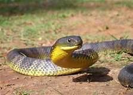
A Tiger by its Tail
A Tiger by its Tail (Tale) After reinstating the old domain of malcolmandnuran.com I have been asked to recommence the Tarpeena Tales blog but after…
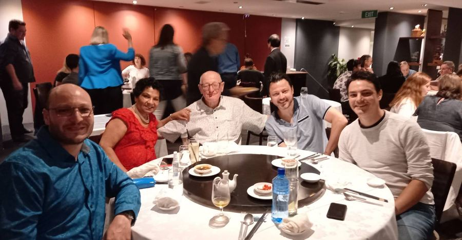
The Golden Years
It's fifty years and a bit now since Nuran and I tied the proverbial knot and since then we've been tying each other up in knots. It hasn't been all…
Volume 3 2011 – 2012
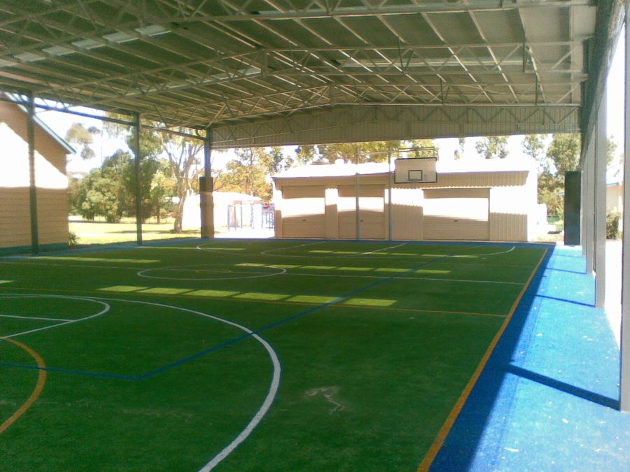
Closing Down
When we moved to Tarpeena some 20 years ago the school was full of kids, the Mobil Service Station had trucks parked around it all day, the Caltex…
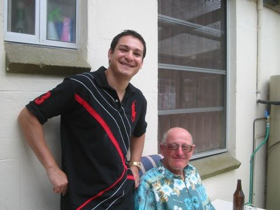
Festivities
Festive Times The first visitor to Tarpeena for Christmas was John who came armed with hot bhuja and jars of Garlic and Ginger from the Elephant…
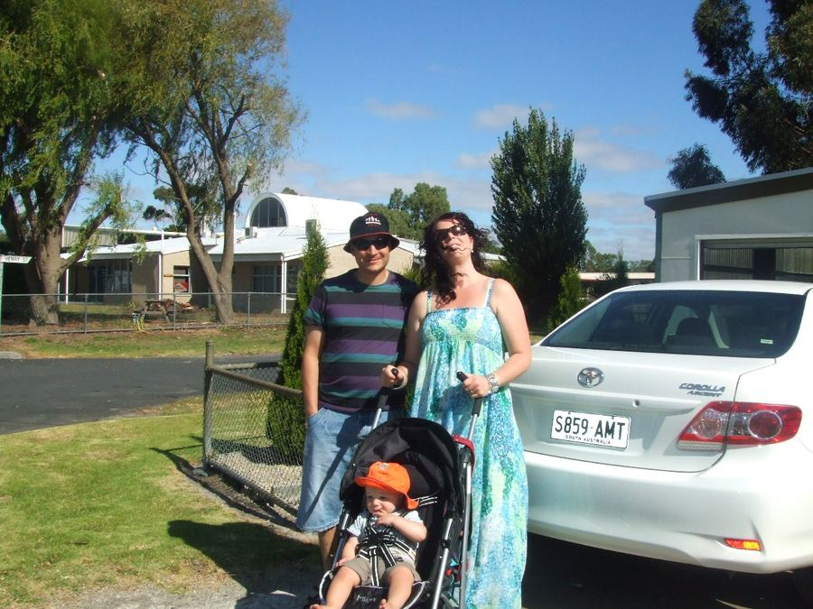
Archies Visit
Welcome Archie Archie James Keenan and his parents, Cilla and Jim, called in on Friday for a weekend visit. His first trip in a plane , other than…
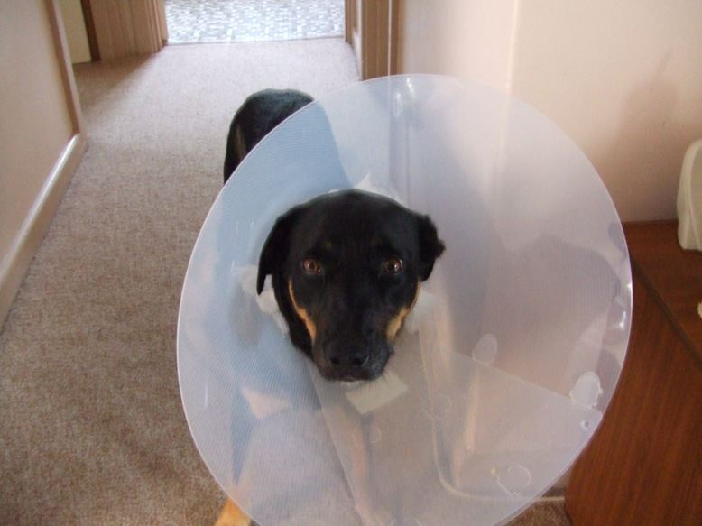
How do You Keep a kelpie Quiet?
One of the delights of living in the country is riding a bike around the pines and local roads with a Kelpie called Banjo. And Nuran loves walking…

New Arrivals
What a surprise to have a phone call from Jim and Cilla announcing the arrival of twin Girls, Nina Elizabeth and Hazel Audrey sisters to Archie. Born…
Volume 2 2009 – 2010

Autumn
Although , with this stupid extended daylight saving, it is hard to throw the covers off and dress to go to take Banjo for a run in the morning, the…
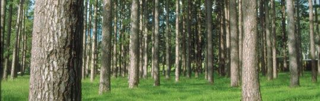
April Showers
Daylight saving has ended at last - Banjo and I were getting annoyed at waking up at 6.30 and having total darkness so unable to ride through the…
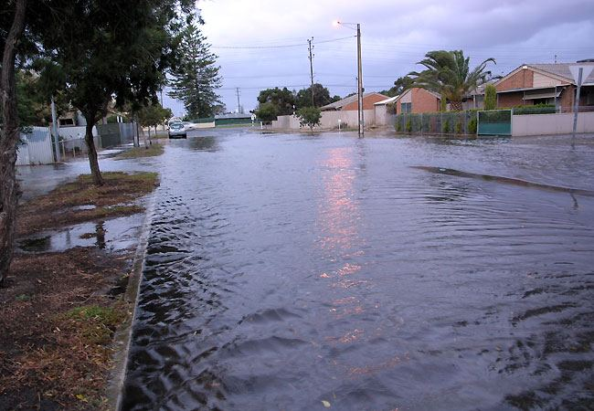
Stormy Weather
I was looking at the rain on the weekend and seeing the tanks overflowing for the first time since late last year and I got to thinking how rain can…
In The News
The Skate Park at Tarpeena has been planned to go on the oval just in front of our place and I have a bit of a battle with the council in trying to…
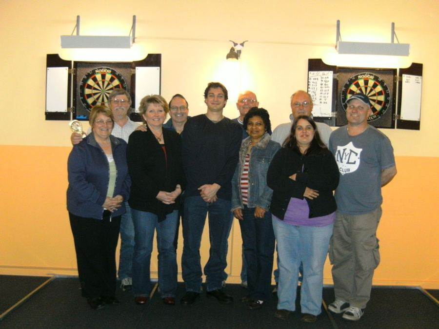
Darts Windup
End of Darts Season Last Monday we held the windup up dinner for the East Enders darts team ,of which I am the Captain, Secretary and Treasurer, at…
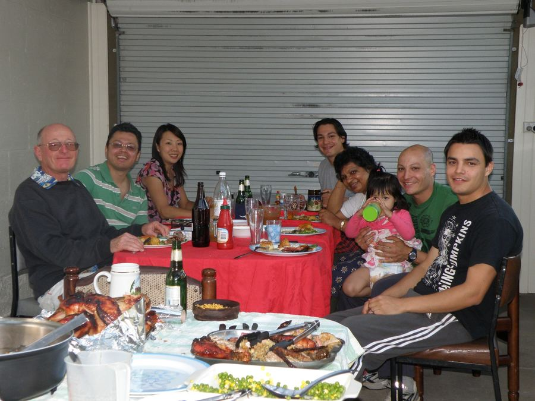
Christmas And All That
Tarpeena Tales Christmas and all that Much to our surprise the family was altogether at Christmas and the carport enclosure was put to good use with…
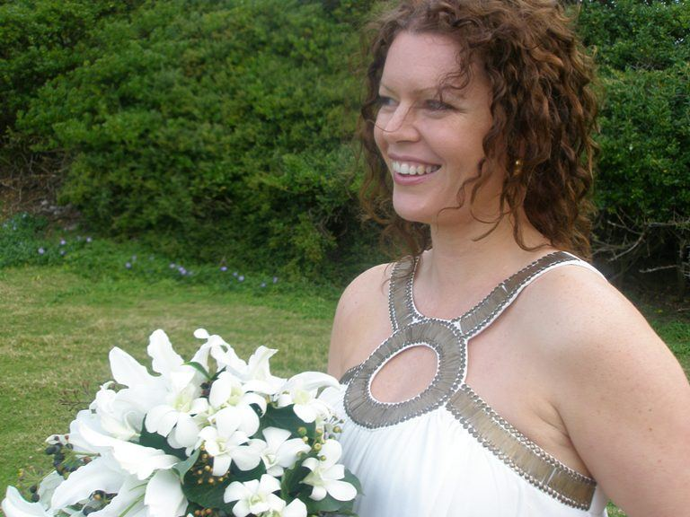
Tassie Wedding
Tasmanian Surprise Nuran and I flew to Launceston to stay a night with Jim and Cilla and then, it was said, a night with Cilla's parents in Smithton…
Spring
Spring in Tarpeena At last the pine pollen has disappeared from the air , washed away by the rains we have been having lately and the only reminder…
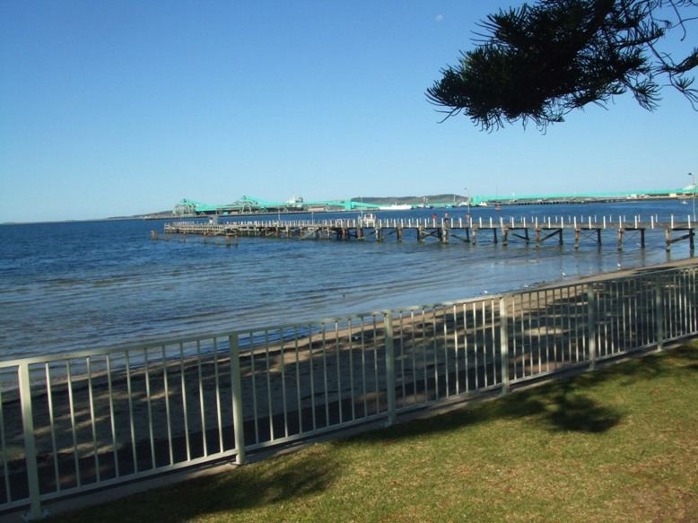
Port Lincoln Trip
Port Lincoln Birthday I fancied oysters on my birthday and they grow them in South Australia near Port Lincoln so, never having been there, it seemed…
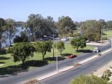
Mildura without a camera ()
To Mildura without a Camera How many times do you depart on a trip going through your mind what you may have left behind only to find out when it's…
Volume 1 2005 – 2007
Tarpeena Tales 1
You wonder, well I do anyway, the meaning of life when as you cycle along the back roads of Tarpeena musing only of the beauty of physical action on…
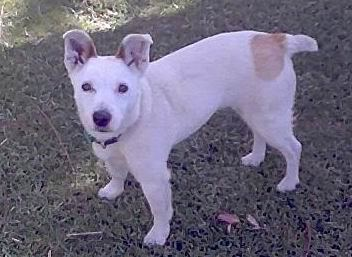
Tarpeena Tales 2
Well the new camera has arrived and is proving to be a doddle to work. The only drawback being that it doesn’t have a flash so its use is limited to…
Tarpeena Tales 3
It was a perfect evening yesterday and surrounded by citronella candles we could enjoy the balmy evening of a type which occur all too infrequently…
Tarpeena Tales 4
This is the friendly season, the flies are very friendly- driving people mad- and every one seems to be waving at you but I think they are flapping…
Tarpeena Tales 5
Nothing changes, it repeats itself in every generation and the only thing that is new is the people. I am reading a history of Tarpeena and back in…
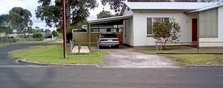
Tarpeena Tales 6
You have to have some bad days to appreciate fully the good ones in fact if you only had good ones you wouldn’t even know they were good until you…
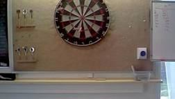
Tarpeena Tales 7
The so called silly season has come and gone but I reckon it’s only silly if you don’t enjoy the festivity and the extra company that arrives at that…
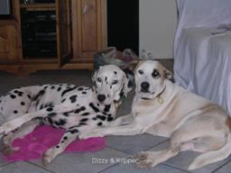
Tarpeena Tales 8
Like most Poms I enjoy a drive in the country so taking that to the extreme Nuran and I drove over to see Jim and Angela (and their two dogs) in…
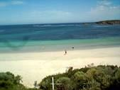
Tarpeena Tales 9
There is an old Pommy song, “I do like to be beside the sea side, Oh I do like to be beside the sea etc.,” well I am an old Pom but generally…

Tarpeena Tales 10
Yesterday, as I was strolling through the Pines,I thought how wrong the prophet was to promise all those martyrs 40 virgins, transient pleasure only…
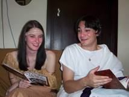
Tarpeena Tales 11
The reason we have retired is that it makes it easier for our sons to summon us when they need help. So it was with gay hearts that we answered…
Tarpeena Tales 12
No matter how you plan a baby they come in their own good time so it was with young Julian, the latest addition to the family. Nuran and I were…
Tarpeena Tales 13
Today was our wedding anniversary, 35 years, and during this time Nuran and I have agreed on most things only mostly at different times. It just goes…
Tarpeena Tales 14
I was thinking today, whilst belting along on my bike, dodging potholes and puddles how life is a bit like learning to ride Now not only was I a slow…
Tarpeena Tales 15
Well there are some things that suddenly bring home to you that you are in fact OLD. The first was when I carked it after a late night visit to the…
Tarpeena Tales 16
Retirement would be great if all it meant was lazing around watching TV playing with grandchildren and sampling the delights of both my home brew and…
Tarpeena Tales 17
It's generally pretty quiet around Tarpeena on the weekends, more so since the local footy club have been unable to raise a team, but the place was…
Tarpeena Tales 18
Nothing happens in Tarpeena but a lot happens close by. Firstly we lost the final game of the dart season by the odd set and that meant we were edged…
Tarpeena Tales 19
Some of you who look forward to my Tarpeena Tales are probably wondering why I have been so slack in writing them of late. Well it's because of my…
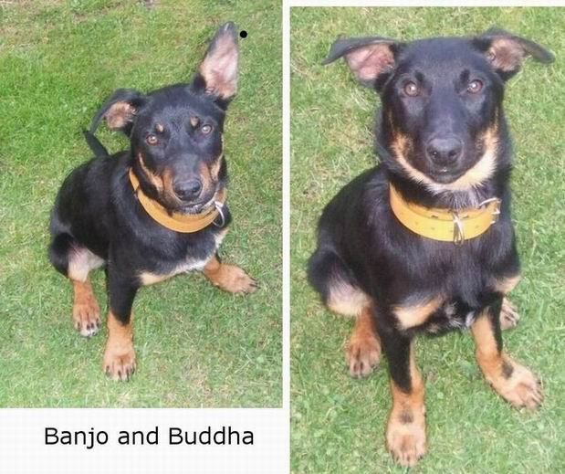
Tarpeena Tales 20
That's it, then. Just like a drunk who has given it up, Just like a smoker who has given it up, Just like a Geelong supporter who should give it up,…
Tarpeena Tales 21
I was going to write a Tarpeena Tales to tell you all what our Christmas was like. But I just didn't have time. I was going to tell you all how nice…
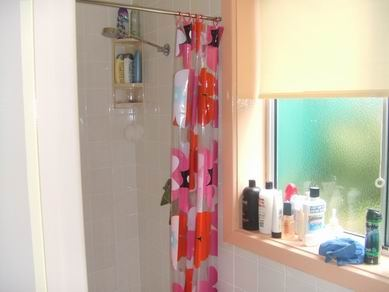
Tarpeena Tales 22
Life is like a black dog. Black dog you may ask but that is what we have, two black dogs, and I was walking in the Pines with them when they…
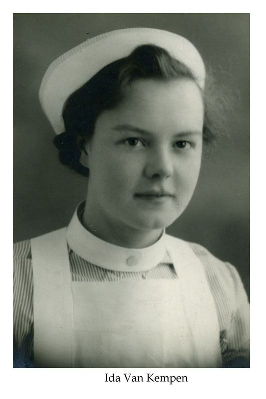
Tarpeena Tales 23
When I went to England for Mum's funeral I wrote my last letter to Mum as an eulogy which was read out at the ceremony along with something Stephen…